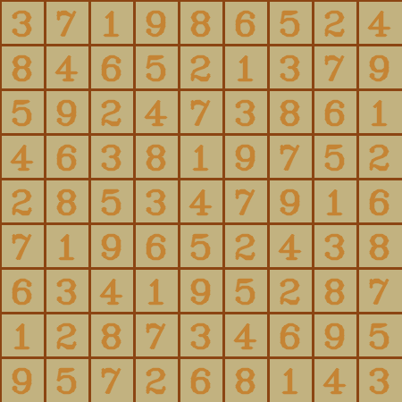

A simple Sudoku Solver that can take a image, identify the sudoku problem and finds a valid solution using a backtracking algorithm.
To use the Sudoku Solver, follow these steps:
git clone https://github.com/nainaamodii/Grid-Guardians.git
Input Sudoku image:
Output:

If you would like to contribute, feel free to open a pull request or issue on GitHub.
| Serial No. | Name | Registration No. | Branch | GitHub ID |
|---|---|---|---|---|
| 1. | Naina Modi (Team Leader) | 20243172 | Computer Science | nainaamodi |
| 2. | Aadya | 20243001 | Computer Science | spicylemonade15 |
| 3. | Rishika Jain | 20243238 | Computer Science | rjain2006 |
| 4. | Nishi Gupta | 20243187 | Computer Science | nishi885 |